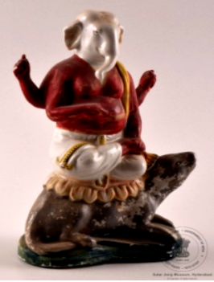

🔇 Is bhasha me is vastu ka audio abhi uplabdh nahi hai.
2. CS - I - 302: मूषक पर गणेश

2. CS - I - 302
चीनी मिट्टी (पोर्सिलेन) की बनी भगवान गणेश की मूर्ति, जिनके चार हाथ हैं और वे एक चूहे पर विराजमान हैं। उनका ऊपरी वस्त्र लाल रंग का है। यह मूर्ति भारत में बनी है और 20वीं सदी की है। भगवान गणेश को प्रायः मूषक पर सवार दिखाया जाता है, जो उनका वाहन है। चूहा अस्थिर मन, इच्छाओं और जटिल परिस्थितियों में मार्ग खोजने की क्षमता का प्रतीक है। भगवान गणेश के मूषक को वाहन के रूप में चुनने के पीछे एक कथा भी है। गणेश में नकारात्मकता को सकारात्मकता में बदलने की शक्ति है, इसलिए उन्होंने मूषक को अपना वाहन चुना। गणेश हिंदू धर्म के हाथीमुख वाले देवता हैं। वे भगवान शिव और देवी पार्वती के पुत्र हैं। गणेश हिंदू धर्म में अत्यंत लोकप्रिय और सर्वाधिक पूजनीय देवताओं में से एक हैं। हिंदू परंपरा के अनुसार, गणेश बुद्धि, धन, सफलता और शुभ लाभ के देवता हैं।
2. CS - I - 302: Ganesha on a Mouse
2. CS - I - 302
A porcelain figure of Lord Ganesha with four arms, seated upon a mouse. His upper garment is red. This figure was made in India and dates to the 20th century. Lord Ganesha is usually shown riding the mouse, which is his vehicle. The mouse symbolises the restless mind, desires, and the ability to find a way through difficult situations. There is also a story behind Lord Ganesha's choice of the mouse as his vehicle. Ganesha has the power to turn negativity into positivity, and so he chose the mouse as his mount. Ganesha is the elephant-headed god of Hinduism. He is the son of Lord Shiva and Goddess Parvati. Ganesha is among the most popular and widely worshipped deities in Hinduism. According to Hindu tradition, Ganesha is the god of wisdom, wealth, success and auspicious beginnings.
2. CS - I - 302: మూషికంపై గణేశుడు
2. CS - I - 302
పింగాణీ (పోర్సిలైన్)తో చేసిన గణేశుని ప్రతిమ, ఆయనకు నాలుగు చేతులు ఉన్నాయి మరియు ఆయన ఎలుకపై ఆసీనుడై ఉన్నారు. ఆయన పైవస్త్రం ఎరుపు రంగులో ఉంది. ఈ ప్రతిమ భారతదేశంలో తయారైనది, 20వ శతాబ్దానికి చెందినది. గణేశుని సాధారణంగా మూషికంపై ఆసీనుడిగా చూపిస్తారు, అదే ఆయన వాహనం. ఎలుక చంచలమైన మనసు, కోరికలు మరియు క్లిష్ట పరిస్థితుల్లో మార్గం కనుగొనే సామర్థ్యానికి ప్రతీక. గణేశుడు మూషికాన్ని వాహనంగా ఎంచుకోవడం వెనుక ఒక కథ కూడా ఉంది. ప్రతికూలతను అనుకూలతగా మార్చే శక్తి గణేశునికి ఉంది, అందుకే ఆయన మూషికాన్ని తన వాహనంగా ఎంచుకున్నారు. గణేశుడు హిందూ ధర్మంలోని గజముఖ దేవుడు. ఆయన శివుడు మరియు పార్వతీ దేవి కుమారుడు. హిందూ ధర్మంలో అత్యంత ప్రజాదరణ పొందిన, ఎక్కువగా పూజించబడే దేవతల్లో గణేశుడు ఒకరు. హిందూ సంప్రదాయం ప్రకారం గణేశుడు బుద్ధి, సంపద, విజయం మరియు శుభ లాభాల దేవుడు.
2. سی ایس-I-303: گنیشچوہا پر
2. سی ایس-I-303
یہ ایک کھڑی ہوئی جاپانی خاتونمایکوکا مجسمہ ہے جو دونوں ہاتھوں میں چھتری تھامے ہوئی ہے۔ اس کے سینے پر گلابی رنگ کے موتیوں کی مالا ہے جو بیلٹ کی مانند دکھائی دیتی ہے۔ مایکو نے پھولوں کے نقش و نگار والا لباس پہنا ہوا ہے اور سر پر پھول لٹک رہے ہیں۔مائیکو دراصل کیوٹو میں گیشا بننے والی طالبہ لڑکیوں کو کہا جاتا ہے۔ انہیں جاپانی رقص سیکھنا ضروری ہوتا ہے، اسی وجہ سے انہیں مایکو کہا جاتا ہے۔مائی کا مطلب رقص اور کو کا مطلب لڑکی ہے۔گیوشا کے گڑیا نما مجسمے جاپان کی خوبصورت خواتین کی نمائندگی کرتے ہیں، جو رقص گائیکیگفتگو اور دیگر صلاحیتوں کے ذریعے تفریح فراہم کرتی ہیں۔ ہر جاپانی گیوشا گڑیا کا لباس ریشم سے نہایت باریک کاریگری کے ساتھ تیار کیا جاتا ہے اور یہ حقیقی جاپانی گیوشا کے کیمونو جیسا دکھائی دیتا ہے۔تمام جاپانی گیوشا گڑیا سیاہ لکڑی کے چبوترے پر نصب کیے گئے ہیں تاکہ اعلیٰ معیار کی خوبصورتی سامنے آئے۔یہ گڑیا جاپانی حکومت کی جانب سے سالار جنگ میوزیم کو مارچ 1966 میں تحفے میں دیے گئے تھے۔
2. سی ایس-I-303: چوہا پرسوار گنیش جی
یہ بھگوان گنیش کا چینی مٹی سے تیار کیا گیا مجسمہ ہے، جو چار ہاتھوں والا ہے ۔ اس کا اوپری لباس سرخ رنگ کا ہے۔یہ مجسمہ ہندوستان میں تیار کیا گیا اور بیسویں صدی سے تعلق رکھتا ہے۔گنیشجی کو عام طور پر چوہے پر سوار دکھایا جاتا ہے، جو ان کی سواری ہے۔ چوہابےچینذہن خواہشات اور پیچیدہ حالات میں قابو پانے کی صلاحیت کی علامت ہے۔ گنیش جی کا چوہے پر سوار ہونا یہ ظاہر کرتا ہے کہ وہ منفی توانائی کو مثبت میں تبدیل کرنے کی صلاحیت رکھتے ہیں۔گنیشجی ہندو مذہب میں ہاتھی سر والے دیوتا ہیں۔ وہ بھگوان شیو اور دیوی پاروتی کے بیٹے ہیں۔گنیش جیہندو مذہب کے نہایت مقبول اور کثرت سے پوجے جانے والے دیوتاؤں میں شمار ہوتے ہیں۔ ہندو روایت کے مطابق گنیش کو دانائی دولت کامیابی اور خوش بختی کا دیوتا مانا جاتا ہے۔
3. سی ایس-I-305: پدمسمبھوا
یہ تاج پہنی ہوئی دیوی پدمسمبھوا کا رنگین چینی مٹی سے بنا ہوا مجسمہ ہے، جو کمل کے پھول پر بیٹھی ہوئی ہیں اور ان کے دس بازو ہیں۔ یہ پیکر ڈھال کر تیار کیا گیا ہے جس میں دس ہاتھ مختلف علامتی اشیا تھامے ہوئے دکھائے گئے ہیں۔ انہوں نے شوخ رنگوں کے آرام دہ اور دلکش لباس زیب تن کی ہوئی ہیں، اور یہ مجسمہ لہروں کے اوپر بنائے گئے کمل نما چبوترے پر نصب ہے۔ یہ بدھ مت کے تانترک مکتبفکر کی ایک نمایاں اور باوقار شخصیت سمجھی جاتی ہیں، جو اپنی روحانی مہارت اور تانترک عبادات و رسوم کے باعث شہرت رکھتے ہیں۔ تبتی بدھ مت میں انہیں نہایت عقیدت کے ساتھ یاد کیا جاتا ہے اور اکثر تبت میں بدھ مت کی بنیاد رکھنے والی عظیم شخصیات میں شمار کی جاتی ہیں ۔ کہا جاتا ہے کہ یہ کمل کے پھول سے پیدا ہوئی، جو بدھ مت کے فن و ادب میں ایک معروف اور مقدس علامت ہے۔ تبت کی ثقافت میں ان کی حیثیت مرکزی ہے اور انہیں مجسموں مصوری اور فنون لطیفہ کی دیگر صورتوں میں کثرت سے پیش کیا جاتا ہے
4سی ایس-I-812: بونا کا مجسمہ
یہ مجسمہ سات بونوں میں سے ایک کردار ڈاک کا ہے جو درخت کے تنے پر بیٹھا ہوا ہے۔ اس کا بایاں ہاتھ کمر پر ہے۔ اس نے سبز رنگ کی ٹوپیسفید قمیص اور سیاہ جوتے پہن رکھے ہیں۔ کمر پر سیاہ بیلٹ ہے ۔ سات بونے ڈزنی کی مشہور متحرک فلم “اسنو وائٹ اینڈ دی سیون ڈوارفس” کے کردار ہیں۔ ان کے نام یہ ہیں ڈاک گرَمپیبےشفول ، سلیپی، اسنیزی، ہیپی اور ڈوپی ۔ ہر ایک کی شخصیت منفرد ہے۔ یہ سب ایک چھوٹے سے کاٹیج میں رہتے ہیں اور ہیروں کی کان میں کام کرتے ہیں۔ وہ اپنی مہربانی اور اسنو وائٹ کو اپنے گھر میں خوش آمدید کہنے کے لیے جانے جاتے ہیں۔ ڈاک اس گروہ کا رہنما ہے اور ذہین و دانا سمجھا جاتا ہے۔ گرَمپی سب سے زیادہ چڑچڑا ہے۔ بیشفل نہایت شرمیلا اور قدرے رومانوی مزاج رکھتا ہے۔ سلیپی ہمیشہ تھکا ہوا محسوس ہوتا ہے۔ سنیزی کا نام اس کی عادت کی طرف اشارہ کرتا ہے۔ ہیپی سب سے زیادہ خوش مزاج اور ہنس مکھ ہے۔ ڈوپی سب سے کم عمر بھولا بھالا گونگا اور بغیر داڑھی کے دکھایا جاتا ہے۔ یہ مجسمہ جرمنی سے تعلق رکھتا ہے اور بیسویں صدی کا ہے۔
5. سی ایس-II-656: کشتی
سنہری ملمع کاری سے مزین جنگی جہاز کا ایک چھوٹا ماڈل، جس میں تین ستون دو سپاہی پانچ توپیں اور چار رڈر موجود ہیں۔ دوسری جانب تین نقاب نما شکلیں بنی ہوئی ہیں۔ ایک سرے پر جھنڈےاور علامتی پرچم نصب ہیں، جبکہ چار تمغہ نما دائروں میں چینی تحریر ہیں۔ یہ جہاز خوب صورت نقش و نگار سے آراستہ لکڑی کے تراشیدہ چبوترے پر نصب ہے۔ اس طرز کے جنگی جہاز چینی روایتی بادبانی کشتیوں کی ایک قسم سے تعلق رکھتے ہیں۔ ان کی نمایاں خصوصیات میں ہموار اور چپٹی تہہ درمیانی مرکزی رڈر اور عموماً سیدھا پچھلا حصہ شامل ہے۔ یہ جہاز عموماً سامان کی نقل و حمل تفریحی سفر اور دریاؤں یا ساحلی علاقوں میں رہائشی کشتیوں کے طور پر بھی استعمال ہوتے رہے ہیں۔ انہیں خاص طور پر دریائی سفر بین الاقوامی تجارت سمندری مہمات اور یہاں تک کہ بحری جنگوں کے لیے بھی تیار کیا جاتا تھا۔ آج بھی ایشیا کے مختلف علاقوں میں اس طرز کی کشتیاں ماہی گیری تجارت اور سیاحت کے لیے استعمال کی جاتی ہیں۔ یہ مختصر جنگی جہاز چاندی سے تیار کیا گیا ہے۔ یہ چینی طرز کا ماڈل جنگی جہاز بیسویں صدی سے تعلق رکھتا ہے۔
6. سی ایس-IV-346: مختصر ساز
یہ ساز کا ایک مختصر نمونہ ہے جس میں چھ تاریں لگی ہوئی ہیں۔ ساز کیباڈی کے کناروں پر ہاتھی دانت کی تزئین کی گئی ہے ، اور سامنے کی چھڑی کے اوپر ہاتھی دانت کا پرندہ نصب ہے جبکہ پیچھے پر ہاتھی دانت سے تراشا گیا پرندے کا سر موجود ہے۔سازکیباڈیگہرے زرد مائل اور سرخی مائل بھورے رنگ کے مڑھے ہوئے پلاسٹک شیٹ سے ڈھکا ہوا ہے۔ یہ آلہ صوتی تاروں سے آواز پیدا کرتا ہے، جو عموماً نائلوناسٹیل یا کبھی کبھار آنتوں کے بنے ہوتے ہیں۔ عموماً تاروں کو انگلیوں سے چھیڑ کر بجایا جاتا ہے، جبکہ بعض اوقات کمان کے ذریعے بھی ان پر حرکت دی جاتی ہے۔ موسیقار اپنی مہارت کے مطابق مختلف انداز اختیار کرتے ہیں۔ یہ مختصر ساز ہاتھی دانت اور لکڑی سے تیار کیا گیا ہے۔ اس کا تعلق یورپ سے ہے اور یہ بیسویں صدی کا ہے۔
7. سی ایس-IV-531: عدالتی منظر
یہ لکڑی پر تراشا گیا ایک عدالت کا منظر ہے۔ ایک افسر کرسی پر بیٹھا ہے اور اس کے سامنے میز رکھی ہے۔ اس کے دونوں جانب ایک ایک ماتحت موجود ہے، جبکہ چار محافظ پہرہ دے رہے ہیں۔ افسر کے سامنے دو ملزمان کھڑے ہیں؛ ایک کے گردن میں لکڑی کا طوق ڈالا گیا ہے اور دوسرے کے دونوں ہاتھوں میں لکڑی کی بیڑیاں ہیں۔ اس کی ابتدا چین سے ہوئی اور یہ بیسویں صدی سے تعلق رکھتا ہے۔ لکڑی پر کی گئی نقش و نگاری کا ایک مجموعہ چینی مذہبی عقائد کی عکاسی کرتا ہے۔ ہندوستانی عقیدے کے مطابق بھی جو لوگ انسانوں اور جانوروں کے ساتھ نیکی کرتے ہیں، انہیں مرنے کے بعد جنت نصیب ہوتی ہے، اور جو برے اعمال کرتے ہیں انہیں جہنم میں سزا دی جاتی ہے۔ مجرموں کو ان کے مختلف گناہوں کے مطابق جہنم میں طرح طرح کی سزائیں بھگتتے ہوئے دکھایا گیا ہے۔
2. سی ایس-I-303: چوہا پرسوار گنیش جی
یہ بھگوان گنیش کا چینی مٹی سے تیار کیا گیا مجسمہ ہے، جو چار ہاتھوں والا ہے ۔ اس کا اوپری لباس سرخ رنگ کا ہے۔یہ مجسمہ ہندوستان میں تیار کیا گیا اور بیسویں صدی سے تعلق رکھتا ہے۔گنیشجی کو عام طور پر چوہے پر سوار دکھایا جاتا ہے، جو ان کی سواری ہے۔ چوہابےچینذہن خواہشات اور پیچیدہ حالات میں قابو پانے کی صلاحیت کی علامت ہے۔ گنیش جی کا چوہے پر سوار ہونا یہ ظاہر کرتا ہے کہ وہ منفی توانائی کو مثبت میں تبدیل کرنے کی صلاحیت رکھتے ہیں۔گنیشجی ہندو مذہب میں ہاتھی سر والے دیوتا ہیں۔ وہ بھگوان شیو اور دیوی پاروتی کے بیٹے ہیں۔گنیش جیہندو مذہب کے نہایت مقبول اور کثرت سے پوجے جانے والے دیوتاؤں میں شمار ہوتے ہیں۔ ہندو روایت کے مطابق گنیش کو دانائی دولت کامیابی اور خوش بختی کا دیوتا مانا جاتا ہے۔
3. سی ایس-I-305: پدمسمبھوا
یہ تاج پہنی ہوئی دیوی پدمسمبھوا کا رنگین چینی مٹی سے بنا ہوا مجسمہ ہے، جو کمل کے پھول پر بیٹھی ہوئی ہیں اور ان کے دس بازو ہیں۔ یہ پیکر ڈھال کر تیار کیا گیا ہے جس میں دس ہاتھ مختلف علامتی اشیا تھامے ہوئے دکھائے گئے ہیں۔ انہوں نے شوخ رنگوں کے آرام دہ اور دلکش لباس زیب تن کی ہوئی ہیں، اور یہ مجسمہ لہروں کے اوپر بنائے گئے کمل نما چبوترے پر نصب ہے۔ یہ بدھ مت کے تانترک مکتبفکر کی ایک نمایاں اور باوقار شخصیت سمجھی جاتی ہیں، جو اپنی روحانی مہارت اور تانترک عبادات و رسوم کے باعث شہرت رکھتے ہیں۔ تبتی بدھ مت میں انہیں نہایت عقیدت کے ساتھ یاد کیا جاتا ہے اور اکثر تبت میں بدھ مت کی بنیاد رکھنے والی عظیم شخصیات میں شمار کی جاتی ہیں ۔ کہا جاتا ہے کہ یہ کمل کے پھول سے پیدا ہوئی، جو بدھ مت کے فن و ادب میں ایک معروف اور مقدس علامت ہے۔ تبت کی ثقافت میں ان کی حیثیت مرکزی ہے اور انہیں مجسموں مصوری اور فنون لطیفہ کی دیگر صورتوں میں کثرت سے پیش کیا جاتا ہے
4سی ایس-I-812: بونا کا مجسمہ
یہ مجسمہ سات بونوں میں سے ایک کردار ڈاک کا ہے جو درخت کے تنے پر بیٹھا ہوا ہے۔ اس کا بایاں ہاتھ کمر پر ہے۔ اس نے سبز رنگ کی ٹوپیسفید قمیص اور سیاہ جوتے پہن رکھے ہیں۔ کمر پر سیاہ بیلٹ ہے ۔ سات بونے ڈزنی کی مشہور متحرک فلم “اسنو وائٹ اینڈ دی سیون ڈوارفس” کے کردار ہیں۔ ان کے نام یہ ہیں ڈاک گرَمپیبےشفول ، سلیپی، اسنیزی، ہیپی اور ڈوپی ۔ ہر ایک کی شخصیت منفرد ہے۔ یہ سب ایک چھوٹے سے کاٹیج میں رہتے ہیں اور ہیروں کی کان میں کام کرتے ہیں۔ وہ اپنی مہربانی اور اسنو وائٹ کو اپنے گھر میں خوش آمدید کہنے کے لیے جانے جاتے ہیں۔ ڈاک اس گروہ کا رہنما ہے اور ذہین و دانا سمجھا جاتا ہے۔ گرَمپی سب سے زیادہ چڑچڑا ہے۔ بیشفل نہایت شرمیلا اور قدرے رومانوی مزاج رکھتا ہے۔ سلیپی ہمیشہ تھکا ہوا محسوس ہوتا ہے۔ سنیزی کا نام اس کی عادت کی طرف اشارہ کرتا ہے۔ ہیپی سب سے زیادہ خوش مزاج اور ہنس مکھ ہے۔ ڈوپی سب سے کم عمر بھولا بھالا گونگا اور بغیر داڑھی کے دکھایا جاتا ہے۔ یہ مجسمہ جرمنی سے تعلق رکھتا ہے اور بیسویں صدی کا ہے۔
5. سی ایس-II-656: کشتی
سنہری ملمع کاری سے مزین جنگی جہاز کا ایک چھوٹا ماڈل، جس میں تین ستون دو سپاہی پانچ توپیں اور چار رڈر موجود ہیں۔ دوسری جانب تین نقاب نما شکلیں بنی ہوئی ہیں۔ ایک سرے پر جھنڈےاور علامتی پرچم نصب ہیں، جبکہ چار تمغہ نما دائروں میں چینی تحریر ہیں۔ یہ جہاز خوب صورت نقش و نگار سے آراستہ لکڑی کے تراشیدہ چبوترے پر نصب ہے۔ اس طرز کے جنگی جہاز چینی روایتی بادبانی کشتیوں کی ایک قسم سے تعلق رکھتے ہیں۔ ان کی نمایاں خصوصیات میں ہموار اور چپٹی تہہ درمیانی مرکزی رڈر اور عموماً سیدھا پچھلا حصہ شامل ہے۔ یہ جہاز عموماً سامان کی نقل و حمل تفریحی سفر اور دریاؤں یا ساحلی علاقوں میں رہائشی کشتیوں کے طور پر بھی استعمال ہوتے رہے ہیں۔ انہیں خاص طور پر دریائی سفر بین الاقوامی تجارت سمندری مہمات اور یہاں تک کہ بحری جنگوں کے لیے بھی تیار کیا جاتا تھا۔ آج بھی ایشیا کے مختلف علاقوں میں اس طرز کی کشتیاں ماہی گیری تجارت اور سیاحت کے لیے استعمال کی جاتی ہیں۔ یہ مختصر جنگی جہاز چاندی سے تیار کیا گیا ہے۔ یہ چینی طرز کا ماڈل جنگی جہاز بیسویں صدی سے تعلق رکھتا ہے۔
6. سی ایس-IV-346: مختصر ساز
یہ ساز کا ایک مختصر نمونہ ہے جس میں چھ تاریں لگی ہوئی ہیں۔ ساز کیباڈی کے کناروں پر ہاتھی دانت کی تزئین کی گئی ہے ، اور سامنے کی چھڑی کے اوپر ہاتھی دانت کا پرندہ نصب ہے جبکہ پیچھے پر ہاتھی دانت سے تراشا گیا پرندے کا سر موجود ہے۔سازکیباڈیگہرے زرد مائل اور سرخی مائل بھورے رنگ کے مڑھے ہوئے پلاسٹک شیٹ سے ڈھکا ہوا ہے۔ یہ آلہ صوتی تاروں سے آواز پیدا کرتا ہے، جو عموماً نائلوناسٹیل یا کبھی کبھار آنتوں کے بنے ہوتے ہیں۔ عموماً تاروں کو انگلیوں سے چھیڑ کر بجایا جاتا ہے، جبکہ بعض اوقات کمان کے ذریعے بھی ان پر حرکت دی جاتی ہے۔ موسیقار اپنی مہارت کے مطابق مختلف انداز اختیار کرتے ہیں۔ یہ مختصر ساز ہاتھی دانت اور لکڑی سے تیار کیا گیا ہے۔ اس کا تعلق یورپ سے ہے اور یہ بیسویں صدی کا ہے۔
7. سی ایس-IV-531: عدالتی منظر
یہ لکڑی پر تراشا گیا ایک عدالت کا منظر ہے۔ ایک افسر کرسی پر بیٹھا ہے اور اس کے سامنے میز رکھی ہے۔ اس کے دونوں جانب ایک ایک ماتحت موجود ہے، جبکہ چار محافظ پہرہ دے رہے ہیں۔ افسر کے سامنے دو ملزمان کھڑے ہیں؛ ایک کے گردن میں لکڑی کا طوق ڈالا گیا ہے اور دوسرے کے دونوں ہاتھوں میں لکڑی کی بیڑیاں ہیں۔ اس کی ابتدا چین سے ہوئی اور یہ بیسویں صدی سے تعلق رکھتا ہے۔ لکڑی پر کی گئی نقش و نگاری کا ایک مجموعہ چینی مذہبی عقائد کی عکاسی کرتا ہے۔ ہندوستانی عقیدے کے مطابق بھی جو لوگ انسانوں اور جانوروں کے ساتھ نیکی کرتے ہیں، انہیں مرنے کے بعد جنت نصیب ہوتی ہے، اور جو برے اعمال کرتے ہیں انہیں جہنم میں سزا دی جاتی ہے۔ مجرموں کو ان کے مختلف گناہوں کے مطابق جہنم میں طرح طرح کی سزائیں بھگتتے ہوئے دکھایا گیا ہے۔
2. CS - I - 302: মূষিকবাহন গণেশ
2. CS - I - 302
চীনামাটির তৈরি ভগবান গণেশের মূর্তি, যাঁর চারটি হাত রয়েছে এবং তিনি একটি ইঁদুরের ওপর উপবিষ্ট। তাঁর দেহের উর্ধ্বাংশের পোশাকটি লাল রঙের। ২০ শতকে, ভারতে এই মূর্তির উদ্ভব। ভগবান গণেশকে সাধারণত মূষিকের অর্থাৎ ইঁদুরের ওপর চড়তে দেখা যায়, যে তাঁর বাহন হিসেবে পরিচিত। এই ইঁদুর, মানুষের চঞ্চল মন, তার কামনা-বাসনা এবং যে কোনো জটিল পথ অতিক্রম করার ক্ষমতার প্রতীক। গণেশের বাহন হিসেবে ইঁদুরকে বেছে নেওয়ার পেছনে একটি পৌরাণিক কাহিনী রয়েছে। নেতিবাচকতাকে ইতিবাচকতায় পরিণত করার অসাধারণ ক্ষমতার কারণেই গণেশ মূষিককে নিজের বাহন হিসেবে বেছে নিয়েছিলেন। হিন্দু ধর্মে গণেশ হলেন হাতির মাথা বিশিষ্ট দেবতা। তিনি ভগবান শিব ও দেবী পার্বতীর পুত্র। হিন্দু ধর্মে গণেশ অত্যন্ত জনপ্রিয় এবং অন্যতম প্রধান পূজ্য দেবতা। হিন্দু ঐতিহ্য অনুযায়ী, গণেশ হলেন প্রজ্ঞা, সমৃদ্ধি, সাফল্য এবং সৌভাগ্যের দেবতা।
2. CS-I-303: મુશિકા પર ગણપતિ
2. CS-I-303
ઉભેલી જાપાની સ્ત્રી “માઇકો”ની પ્રતિમા, જેણે બંને હાથમાં છત્રી પકડી રાખી છે. છાતી પર ગુલાબી રંગની મણિયાની પટ્ટી (બેલ્ટ) જેવી શોભા છે. ફૂલોના આકારવાળું વસ્ત્ર પરિધાન કર્યા છે અને માથેથી લટકતા ફૂલોની સજાવટ છે. “માઇકો”નો અર્થ ક્યોટોમાં શિક્ષાર્થી ગેશા યુવતી થાય છે. તેમને જાપાની નૃત્યો શીખવા ફરજિયાત હોય છે, તેથી તેમને “માઇકો” કહેવામાં આવે છે — કારણ કે “માઇ” એટલે નૃત્ય અને “કો” એટલે છોકરી. ગેશા ગુડિયા એવી આકર્ષક જાપાની સ્ત્રીઓનું પ્રતિનિધિત્વ કરે છે જે નૃત્ય, ગીત, સંવાદ અને અન્ય પ્રતિભા દ્વારા મનોરંજન આપે છે. દરેક જાપાની ગેશા ગુડિયાનું વસ્ત્ર રેશમથી સુંદર રીતે બનાવવામાં આવ્યું છે અને તે ખરેખર જાપાની ગેશાઓ દ્વારા પહેરાતી અસલી કિમોનો જેવી લાગે છે. અમારી (અહીની) તમામ જાપાની ગેશા ગુડિયાઓને ઊંચી ગુણવત્તા આપવા માટે કાળા લાકડાના તખ્તા પર ઉભી રાખવામાં આવી છે. આ ગુડિયાઓ જાપાન સરકારે માર્ચ 1966માં સલાર જંગ સંગ્રહાલયને ભેટ તરીકે આપી હતી.
2. CS - I - 302 :ಗಣೇಶ ಆನ್ ಮುಶಿಕಾ
2. CS - I - 302
ನಾಲ್ಕು ಕೈಗಳನ್ನು ಹೊಂದಿರುವ ಮತ್ತು ಇಲಿಯ ಮೇಲೆ ಆಸೀನರಾಗಿರುವ ಗಣೇಶನ ಪಿಂಗಾಣಿಯ ಸುಂದರ ಶಿಲ್ಪ ಕಲಾಕೃತಿಯಾಗಿದೆ. ಮೇಲುಡುಪುಕೆಂಪು ಬಣ್ಣದ್ದಾಗಿದೆ. ಭಾರತದಲ್ಲಿಯೇ ರೂಪುಗೊಂಡಿರುವ ಈ ಕಲಾಕೃತಿಯು 20ನೇ ಶತಮಾನದಷ್ಟು ಹಳೆಯದಾಗಿದೆ. ಗಣೇಶನು ತನ್ನ ವಾಹನವಾದ 'ಮೂಷಿಕ'ನಮೇಲೆ ಸವಾರಿ ಮಾಡುತ್ತಿರುವಂತೆ ಹೆಚ್ಚಾಗಿ ಚಿತ್ರಿಸಲಾಗುತ್ತದೆ. ಇಲಿಯು ಚಂಚಲ ಮನಸ್ಸು, ಆಸೆಗಳು ಮತ್ತು ಅತ್ಯಂತ ಸಂಕೀರ್ಣವಾದ ಮಾರ್ಗಗಳಲ್ಲಿಯೂ ಸಲೀಸಾಗಿ ಚಲಿಸುವ ಸಾಮರ್ಥ್ಯವನ್ನು ಪ್ರತಿನಿಧಿಸುತ್ತದೆ. ಗಣೇಶನು ಇಲಿಯನ್ನು ತನ್ನ ವಾಹನವನ್ನಾಗಿ ಹೊಂದಿರುವ ಹಿಂದೆ ಒಂದು ಪೌರಾಣಿಕ ಕಥೆಯಿದೆ. ಮೂಷಿಕನನ್ನು ವಾಹನವಾಗಿ ಆರಿಸಿಕೊಳ್ಳುವ ಮೂಲಕ, ನಕಾರಾತ್ಮಕತೆಯನ್ನು ಸಕಾರಾತ್ಮಕವಾಗಿ ಪರಿವರ್ತಿಸುವ ಗಣೇಶನ ಅಪಾರ ಸಾಮರ್ಥ್ಯವನ್ನು ಇದು ಎತ್ತಿತೋರಿಸುತ್ತದೆ. ಹಿಂದೂ ಧರ್ಮದಲ್ಲಿ ಗಣೇಶನು ಆನೆಮುಖವನ್ನು ಹೊಂದಿರುವ ದೇವರಾಗಿದ್ದಾನೆ. ಆತ ಶಿವ ಮತ್ತು ಪಾರ್ವತಿಯರ ಮುದ್ದಿನ ಮಗ. ಹಿಂದೂ ಧರ್ಮದಲ್ಲಿ ಗಣೇಶನು ಅತ್ಯಂತ ಜನಪ್ರಿಯ ದೇವರಾಗಿದ್ದು, ಅತಿ ಹೆಚ್ಚು ಪೂಜಿಸಲ್ಪಡುವ ದೇವರುಗಳಲ್ಲಿ ಒಬ್ಬನಾಗಿದ್ದಾನೆ. ಹಿಂದೂ ಸಂಪ್ರದಾಯದ ಪ್ರಕಾರ, ಗಣೇಶನನ್ನು ಬುದ್ಧಿವಂತಿಕೆ, ಸಂಪತ್ತು, ಯಶಸ್ಸು ಮತ್ತು ಅದೃಷ್ಟದ ದೇವರು ಎಂದು ಕರೆಯಲಾಗುತ್ತದೆ.
2. CS - I - 302: ମୂଷକ ଉପରେ ଗଣେଶ
2. CS - I - 302
ଚାରି ହାତ ବିଶିଷ୍ଟ ଏବଂ ଏକ ମୂଷା ଉପରେ ବସିଥିବା ଭଗବାନ ଗଣେଶଙ୍କ ଏକ ମାଟିର ନିର୍ମିତ ପ୍ରତିମା। ଉପର ପୋଷାକ ଲାଲ ରଙ୍ଗର। ଏହା ଭାରତରେ ଉତ୍ପତ୍ତି ଏବଂ 20 ଶତାବ୍ଦୀର ଅଟେ, ଭଗବାନ ଗଣେଶଙ୍କୁ ତାଙ୍କର ବାହନ ଭାବରେ ମୂଷକ ନାମକ ଏକ ମୂଷା ଉପରେ ଆରୁଢ଼ ଥିବା ଚିତ୍ରିତ କରାଯାଇଛି। ମୂଷା ଏକ ଚଞ୍ଚଳ ମନ, ଇଚ୍ଛା ଏବଂ ଜଟିଳ ପଥ ପରିଚାଳିତ କରିବାର କ୍ଷମତାର ପ୍ରତୀକ। ପ୍ରଭୁ ଗଣେଶ ମୂଷାକୁ ତାଙ୍କର ବାହନ ଭାବରେ ବାଛିବା ପଛରେ ଏକ କାହାଣୀ ଅଛି।ଗଣେଶଙ୍କ ପାଖରେ ନକାରାତ୍ମକତାକୁ ସକାରାତ୍ମକତାରେ ପରିଣତ କରିବାର କ୍ଷମତା ଅଛି, କାରଣ ସେ ମୂଷକ ନାମକ ଏକ ମୂଷା ଉପରେ ଆରୁଢ଼ ହେବାକୁ ବାଛିଥିଲେ। ଗଣେଶ ହିନ୍ଦୁ ଧର୍ମରେ ହାତୀ ମୁଣ୍ଡିଆ ଦେବତା। ସେ ଭଗବାନ ଶିବ ଏବଂ ଦେବୀ ପାର୍ବତୀଙ୍କ ପୁତ୍ର। ଗଣେଶ ହିନ୍ଦୁ ଧର୍ମରେ ଏକ ଅତ୍ୟନ୍ତ ଲୋକପ୍ରିୟ ଦେବତା ଏବଂ ସବୁଠାରୁ ପୂଜା ପାଉଥିବା ଦେବତାମାନଙ୍କ ମଧ୍ୟରୁ ଜଣେ। ହିନ୍ଦୁ ପରମ୍ପରା ଅନୁସାରେ, ଗଣେଶ ଜ୍ଞାନ, ଧନ, ସଫଳତା ଏବଂ ସୌଭାଗ୍ୟର ଦେବତା।
3. CS - I- 305: ପଦ୍ମସମ୍ଭବ
ଏହା ଏକ ରଙ୍ଗିତ ପୋର୍ସେଲିନ୍ ମୂର୍ତ୍ତି, ଯେଉଁଠି ମୁକୁଟଧାରୀ ଦେବୀ ପଦ୍ମସମ୍ଭବାଙ୍କୁ ଦଶହସ୍ତୀ ରୂପରେ ଏକ ପଦ୍ମ ଉପରେ ବସିଥିବା ଭାବରେ ଦେଖାଯାଇଛି। ଏହି ଦାଓଇସ୍ଟ ଆକୃତିଟିକୁ ଦଶ ହସ୍ତ ସହିତ ଗଢ଼ାଯାଇଛି, ଯେଉଁହସ୍ତଗୁଡିକରେ ବିଭିନ୍ନ ପ୍ରତୀକ ଓ ଅସ୍ତ୍ର ରହିଛି। ସେ ଚକମକିଆ ରଙ୍ଗର ଢିଲା ପୋଶାକ ପିନ୍ଧିଛନ୍ତି ଏବଂ ତରଙ୍ଗ ଉପରେ ଥିବା ଗଢ଼ିତ ପଦ୍ମ ଆସନ ଉପରେ ବସିଛନ୍ତି। ପଦ୍ମସମ୍ଭବା ତାନ୍ତ୍ରିକ ବୌଦ୍ଧ ଧର୍ମରେ ଏକ ପ୍ରମୁଖ ବ୍ୟକ୍ତିତ୍ୱ, ଯିଏ ତାନ୍ତ୍ରିକ ସାଧନା ଓ ରିତୁଆଲ୍ରେ ପାରଙ୍ଗତ ଭାବରେ ପରିଚିତ। ସେ ତିବ୍ବତୀ ବୌଦ୍ଧ ଧର୍ମରେ ଏକ ଅତ୍ୟନ୍ତ ପୂଜ୍ୟ ଅବତାର, ଯିଏକି ତିବ୍ବତରେ ବୌଦ୍ଧ ଧର୍ମର ସ୍ଥାପକମାନଙ୍କ ମଧ୍ୟରୁ ଗଣାଯାନ୍ତି। ତିବ୍ଦତରେ ବୌଦ୍ଧ ଧର୍ମ ପ୍ରତିଷ୍ଠା ଏବଂ ସୁଦୃଢ଼ କରିବାରେ ପଦ୍ମସମ୍ଭବ ପ୍ରମୁଖ ଭୂମିକା ଗ୍ରହଣ କରିଥିଲେ। କୁହାଯାଏ ଯେ ସେ ଏକ ପଦ୍ମଫୁଲରୁ ଜନ୍ମଗ୍ରହଣ କରିଥିଲେ, ଯାହା ବୌଦ୍ଧ କଳା ଏବଂ ସାହିତ୍ୟରେ ଏକ ସାଧାରଣ ପ୍ରତୀକ। ପଦ୍ମସମ୍ଭବ ତିବ୍ଦତୀୟ ସଂସ୍କୃତିର ଏକ କେନ୍ଦ୍ରୀୟ ବ୍ୟକ୍ତିତ୍ୱ ଏବଂ ସମଗ୍ର ଅଞ୍ଚଳରେ ପ୍ରତିମା, ଚିତ୍ରକଳା ଏବଂ ଅନ୍ୟାନ୍ୟ କଳାରେ ତାଙ୍କୁ ଚିତ୍ରିତ କରାଯାଇଛି। ଏହା ଜାପାନରୁ ଆରମ୍ଭ ହୋଇଥିଲା ଏବଂ 19 ଶତାବ୍ଦୀରୁ ଆରମ୍ଭ ହୋଇଥିଲା।
4. CS - I - 812: ବାମନଙ୍କ ଚିତ୍ର
ଏଠାରେ ଡକ୍, ସାତ ବାମନଙ୍କ ମଧ୍ୟରୁ ଜଣେ, ଏକ ଗଛ ଗଣ୍ଡିରେ ବସିଛନ୍ତି, ତାଙ୍କ ବାମ ହାତ ତାଙ୍କ କଟି ଉପରେ ଅଛି, ଏକ ସବୁଜ ଟୋପି, ଏକ ଧଳା ସାର୍ଟ ଏବଂ କଳା ଜୋତା ପିନ୍ଧିଛନ୍ତି। ଏହି ପ୍ରତିମୂର୍ତ୍ତିଟି ହଳଦିଆ ବକଲ୍ ସହିତ ଏକ କଳା ବେଲ୍ଟ ପିନ୍ଧିଛି। ସାତ ବାମନ ହେଉଛନ୍ତି ଡିଜନି ଆନିମେଟେଡ୍ ଫିଲ୍ମ "ସ୍ନୋ ହ୍ୱାଇଟ୍ ଆଣ୍ଡ୍ ଦି ସେଭେନ୍ ଡ୍ୱାର୍ଫ୍ସ" ର ଚରିତ୍ରମାନଙ୍କର ଏକ ଗୋଷ୍ଠୀ। ସେମାନେ ହେଉଛନ୍ତି ଡକ୍, ଗ୍ରମ୍ପି, ଲାସଫୁଲ୍, ସ୍ଲିପି, ସ୍ନିଜି, ଖୁସି ଏବଂ ଡୋପେ, ପ୍ରତ୍ୟେକଙ୍କ ନିଜସ୍ୱ ଅନନ୍ୟ ବ୍ୟକ୍ତିତ୍ୱ। ସେମାନେ ଏକ କୁଟୀରରେ ରୁହନ୍ତି ଏବଂ ଏକ ହୀରା ଖଣିରେ କାମ କରନ୍ତି। ସେମାନେ ତାଙ୍କର ଦୟାଳୁ ସ୍ଵଭାବ ଏବଂ ସ୍ନୋ ହ୍ୱାଇଟ୍କୁ ନିଜ ଘରକୁ ସ୍ୱାଗତ କରିବା ପାଇଁ ପରିଚିତ। ଡକ୍ ଦଳର ନେତା, ବୁଦ୍ଧିମାନ ଏବଂ ଜ୍ଞାନୀ। ଗ୍ରମ୍ପି ସବୁଠୁ ଚିଢ଼ାଳୁ ଏବଂ ଅସନ୍ତୁଷ୍ଟ ବାମନ। ବାଶଫୁଲ୍ ସବୁଠୁ ଲଜ୍ଜାଳୁ ଏବଂ ରୋମାନ୍ଟିକ୍। ସ୍ଲିପି ସବୁବେଳେ ଘୁମେ ଓ ଅଳସି। ସ୍ନିଜି ଏକମାତ୍ର ବାମନ ଯାହାର ନାମ ତାହାର ବ୍ୟକ୍ତିତ୍ୱକୁ ନୁହେଁ, ବରଂ ଏକ ଚିକିତ୍ସା ଅବସ୍ଥାକୁ ପ୍ରତିନିଧିତ୍ୱ କରେ। ହ୍ୟାପି ସବୁଠୁ ଖୁସି ଓ ହାସମୁଖ। ଡୋପି ସବୁଠୁ ଛୋଟ, ଅସାବଧାନ, ନିର୍ବାକ ଏବଂ ଦାଢ଼ିହୀନ ବାମନ। ଏହାର ଉତ୍ପତ୍ତି ଜର୍ମାନୀରୁ ହୋଇଛି ଏବଂ ଏହାର ଇତିହାସ 20ମ ଶତାବ୍ଦୀର।
3. CS - I- 305: ପଦ୍ମସମ୍ଭବ
ଏହା ଏକ ରଙ୍ଗିତ ପୋର୍ସେଲିନ୍ ମୂର୍ତ୍ତି, ଯେଉଁଠି ମୁକୁଟଧାରୀ ଦେବୀ ପଦ୍ମସମ୍ଭବାଙ୍କୁ ଦଶହସ୍ତୀ ରୂପରେ ଏକ ପଦ୍ମ ଉପରେ ବସିଥିବା ଭାବରେ ଦେଖାଯାଇଛି। ଏହି ଦାଓଇସ୍ଟ ଆକୃତିଟିକୁ ଦଶ ହସ୍ତ ସହିତ ଗଢ଼ାଯାଇଛି, ଯେଉଁହସ୍ତଗୁଡିକରେ ବିଭିନ୍ନ ପ୍ରତୀକ ଓ ଅସ୍ତ୍ର ରହିଛି। ସେ ଚକମକିଆ ରଙ୍ଗର ଢିଲା ପୋଶାକ ପିନ୍ଧିଛନ୍ତି ଏବଂ ତରଙ୍ଗ ଉପରେ ଥିବା ଗଢ଼ିତ ପଦ୍ମ ଆସନ ଉପରେ ବସିଛନ୍ତି। ପଦ୍ମସମ୍ଭବା ତାନ୍ତ୍ରିକ ବୌଦ୍ଧ ଧର୍ମରେ ଏକ ପ୍ରମୁଖ ବ୍ୟକ୍ତିତ୍ୱ, ଯିଏ ତାନ୍ତ୍ରିକ ସାଧନା ଓ ରିତୁଆଲ୍ରେ ପାରଙ୍ଗତ ଭାବରେ ପରିଚିତ। ସେ ତିବ୍ବତୀ ବୌଦ୍ଧ ଧର୍ମରେ ଏକ ଅତ୍ୟନ୍ତ ପୂଜ୍ୟ ଅବତାର, ଯିଏକି ତିବ୍ବତରେ ବୌଦ୍ଧ ଧର୍ମର ସ୍ଥାପକମାନଙ୍କ ମଧ୍ୟରୁ ଗଣାଯାନ୍ତି। ତିବ୍ଦତରେ ବୌଦ୍ଧ ଧର୍ମ ପ୍ରତିଷ୍ଠା ଏବଂ ସୁଦୃଢ଼ କରିବାରେ ପଦ୍ମସମ୍ଭବ ପ୍ରମୁଖ ଭୂମିକା ଗ୍ରହଣ କରିଥିଲେ। କୁହାଯାଏ ଯେ ସେ ଏକ ପଦ୍ମଫୁଲରୁ ଜନ୍ମଗ୍ରହଣ କରିଥିଲେ, ଯାହା ବୌଦ୍ଧ କଳା ଏବଂ ସାହିତ୍ୟରେ ଏକ ସାଧାରଣ ପ୍ରତୀକ। ପଦ୍ମସମ୍ଭବ ତିବ୍ଦତୀୟ ସଂସ୍କୃତିର ଏକ କେନ୍ଦ୍ରୀୟ ବ୍ୟକ୍ତିତ୍ୱ ଏବଂ ସମଗ୍ର ଅଞ୍ଚଳରେ ପ୍ରତିମା, ଚିତ୍ରକଳା ଏବଂ ଅନ୍ୟାନ୍ୟ କଳାରେ ତାଙ୍କୁ ଚିତ୍ରିତ କରାଯାଇଛି। ଏହା ଜାପାନରୁ ଆରମ୍ଭ ହୋଇଥିଲା ଏବଂ 19 ଶତାବ୍ଦୀରୁ ଆରମ୍ଭ ହୋଇଥିଲା।
4. CS - I - 812: ବାମନଙ୍କ ଚିତ୍ର
ଏଠାରେ ଡକ୍, ସାତ ବାମନଙ୍କ ମଧ୍ୟରୁ ଜଣେ, ଏକ ଗଛ ଗଣ୍ଡିରେ ବସିଛନ୍ତି, ତାଙ୍କ ବାମ ହାତ ତାଙ୍କ କଟି ଉପରେ ଅଛି, ଏକ ସବୁଜ ଟୋପି, ଏକ ଧଳା ସାର୍ଟ ଏବଂ କଳା ଜୋତା ପିନ୍ଧିଛନ୍ତି। ଏହି ପ୍ରତିମୂର୍ତ୍ତିଟି ହଳଦିଆ ବକଲ୍ ସହିତ ଏକ କଳା ବେଲ୍ଟ ପିନ୍ଧିଛି। ସାତ ବାମନ ହେଉଛନ୍ତି ଡିଜନି ଆନିମେଟେଡ୍ ଫିଲ୍ମ "ସ୍ନୋ ହ୍ୱାଇଟ୍ ଆଣ୍ଡ୍ ଦି ସେଭେନ୍ ଡ୍ୱାର୍ଫ୍ସ" ର ଚରିତ୍ରମାନଙ୍କର ଏକ ଗୋଷ୍ଠୀ। ସେମାନେ ହେଉଛନ୍ତି ଡକ୍, ଗ୍ରମ୍ପି, ଲାସଫୁଲ୍, ସ୍ଲିପି, ସ୍ନିଜି, ଖୁସି ଏବଂ ଡୋପେ, ପ୍ରତ୍ୟେକଙ୍କ ନିଜସ୍ୱ ଅନନ୍ୟ ବ୍ୟକ୍ତିତ୍ୱ। ସେମାନେ ଏକ କୁଟୀରରେ ରୁହନ୍ତି ଏବଂ ଏକ ହୀରା ଖଣିରେ କାମ କରନ୍ତି। ସେମାନେ ତାଙ୍କର ଦୟାଳୁ ସ୍ଵଭାବ ଏବଂ ସ୍ନୋ ହ୍ୱାଇଟ୍କୁ ନିଜ ଘରକୁ ସ୍ୱାଗତ କରିବା ପାଇଁ ପରିଚିତ। ଡକ୍ ଦଳର ନେତା, ବୁଦ୍ଧିମାନ ଏବଂ ଜ୍ଞାନୀ। ଗ୍ରମ୍ପି ସବୁଠୁ ଚିଢ଼ାଳୁ ଏବଂ ଅସନ୍ତୁଷ୍ଟ ବାମନ। ବାଶଫୁଲ୍ ସବୁଠୁ ଲଜ୍ଜାଳୁ ଏବଂ ରୋମାନ୍ଟିକ୍। ସ୍ଲିପି ସବୁବେଳେ ଘୁମେ ଓ ଅଳସି। ସ୍ନିଜି ଏକମାତ୍ର ବାମନ ଯାହାର ନାମ ତାହାର ବ୍ୟକ୍ତିତ୍ୱକୁ ନୁହେଁ, ବରଂ ଏକ ଚିକିତ୍ସା ଅବସ୍ଥାକୁ ପ୍ରତିନିଧିତ୍ୱ କରେ। ହ୍ୟାପି ସବୁଠୁ ଖୁସି ଓ ହାସମୁଖ। ଡୋପି ସବୁଠୁ ଛୋଟ, ଅସାବଧାନ, ନିର୍ବାକ ଏବଂ ଦାଢ଼ିହୀନ ବାମନ। ଏହାର ଉତ୍ପତ୍ତି ଜର୍ମାନୀରୁ ହୋଇଛି ଏବଂ ଏହାର ଇତିହାସ 20ମ ଶତାବ୍ଦୀର।
2. CS - I - 302: उंदरावर गणेश
2. CS - I - 302
चिनीमातीची (पोर्सलिन) भगवान गणेशाची मूर्ती, ज्यांना चार हात असून ते उंदरावर विराजमान आहेत. त्यांचे वरचे वस्त्र लाल रंगाचे आहे. ही मूर्ती भारतात बनली असून २०व्या शतकातील आहे. भगवान गणेशाला बहुधा मूषकावर स्वार दाखवले जाते, जो त्यांचा वाहन आहे. उंदीर हा अस्थिर मन, इच्छा आणि गुंतागुंतीच्या परिस्थितीत मार्ग शोधण्याच्या क्षमतेचे प्रतीक आहे. गणेशाने मूषकाला वाहन म्हणून निवडण्यामागे एक कथाही आहे. गणेशामध्ये नकारात्मकतेचे सकारात्मकतेत रूपांतर करण्याची शक्ती आहे, म्हणून त्यांनी मूषकाला आपले वाहन निवडले. गणेश हे हिंदू धर्मातील गजमुख देव आहेत. ते भगवान शिव आणि देवी पार्वती यांचे पुत्र आहेत. गणेश हे हिंदू धर्मातील अत्यंत लोकप्रिय आणि सर्वाधिक पूजनीय देवतांपैकी एक आहेत. हिंदू परंपरेनुसार गणेश हे बुद्धी, संपत्ती, यश आणि शुभ लाभ यांचे देव आहेत.
2. CS - I - 302: മൂഷികവാഹനനായഗണപതി
2. CS - I - 302
നാല്കൈകളുള്ള, തന്റെവാഹനമായമൂഷികന്റെപുറത്തിരിക്കുന്നരീതിയിലുള്ളഗണപതിഭഗവാന്റെപോർസലൈൻശില്പം. ഇതിൽ ചുവപ്പ്നിറത്തിലുള്ളമേൽവസ്ത്രമാണ്ഗണപതിഅണിഞ്ഞിരിക്കുന്നത്. ഇരുപതാംനൂറ്റാണ്ടിൽ ഇന്ത്യയിൽ നിർമ്മിക്കപ്പെട്ടതാണ് ഈ രൂപം.
ഗണപതിഭഗവാൻ മൂഷികനെവാഹനമാക്കിയതിന്പിന്നിൽ വലിയൊരുഅർത്ഥമുണ്ട്. അടങ്ങാത്തമനസ്സിനെയുംആഗ്രഹങ്ങളെയുംഏതുദുർഘടമായസാഹചര്യങ്ങളെയുംതരണംചെയ്യാനുള്ളകഴിവിനെയുമാണ്എലിപ്രതിനിധീകരിക്കുന്നത്. നെഗറ്റീവ്ഊർജ്ജത്തെപോസിറ്റീവ്ആക്കിമാറ്റാനുള്ളഗണപതിയുടെകഴിവാണ്മൂഷികനെവാഹനമായിതിരഞ്ഞെടുത്തതിലൂടെവ്യക്തമാകുന്നത്. ഹിന്ദുമതവിശ്വാസപ്രകാരംആനയുടെതലയുള്ളദൈവമാണ്ഗണപതി. ശിവഭഗവാന്റെയുംപാർവ്വതിദേവിയുടെയുംപുത്രനായഅദ്ദേഹംഏറ്റവുമധികംആരാധിക്കപ്പെടുന്നദൈവങ്ങളിൽ ഒരാളാണ്. ബുദ്ധി, ഐശ്വര്യം, വിജയം, ഭാഗ്യംഎന്നിവയുടെദേവനായാണ്ഹൈന്ദവപാരമ്പര്യത്തിൽ ഗണപതിയെകണക്കാക്കുന്നത്.
ഗണപതിഭഗവാൻ മൂഷികനെവാഹനമാക്കിയതിന്പിന്നിൽ വലിയൊരുഅർത്ഥമുണ്ട്. അടങ്ങാത്തമനസ്സിനെയുംആഗ്രഹങ്ങളെയുംഏതുദുർഘടമായസാഹചര്യങ്ങളെയുംതരണംചെയ്യാനുള്ളകഴിവിനെയുമാണ്എലിപ്രതിനിധീകരിക്കുന്നത്. നെഗറ്റീവ്ഊർജ്ജത്തെപോസിറ്റീവ്ആക്കിമാറ്റാനുള്ളഗണപതിയുടെകഴിവാണ്മൂഷികനെവാഹനമായിതിരഞ്ഞെടുത്തതിലൂടെവ്യക്തമാകുന്നത്. ഹിന്ദുമതവിശ്വാസപ്രകാരംആനയുടെതലയുള്ളദൈവമാണ്ഗണപതി. ശിവഭഗവാന്റെയുംപാർവ്വതിദേവിയുടെയുംപുത്രനായഅദ്ദേഹംഏറ്റവുമധികംആരാധിക്കപ്പെടുന്നദൈവങ്ങളിൽ ഒരാളാണ്. ബുദ്ധി, ഐശ്വര്യം, വിജയം, ഭാഗ്യംഎന്നിവയുടെദേവനായാണ്ഹൈന്ദവപാരമ്പര്യത്തിൽ ഗണപതിയെകണക്കാക്കുന്നത്.